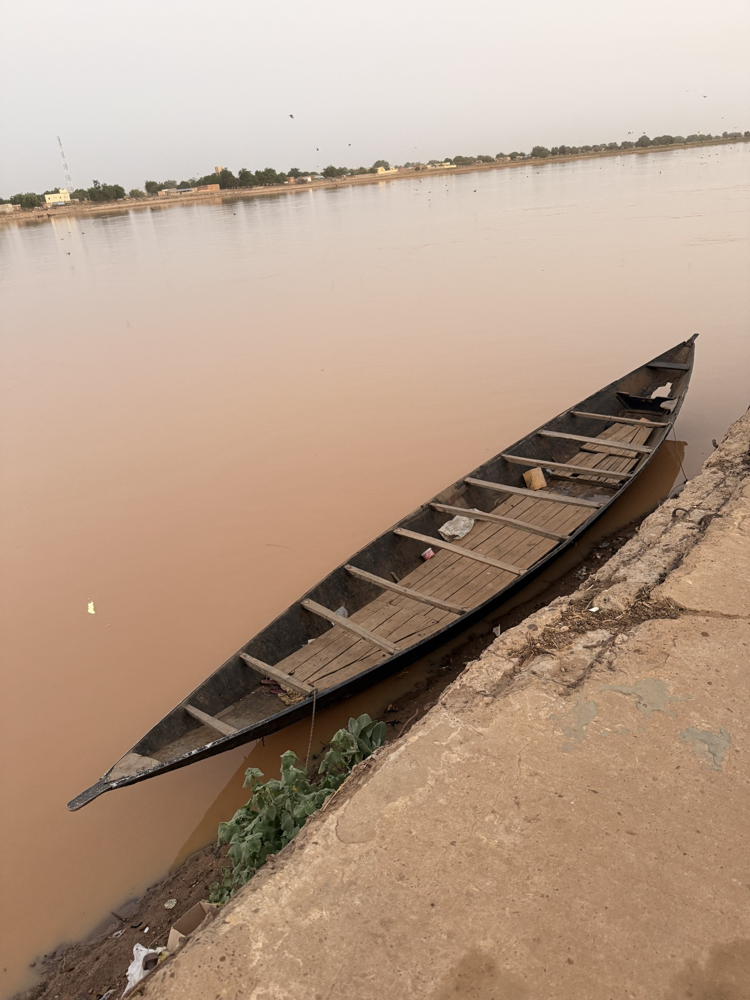
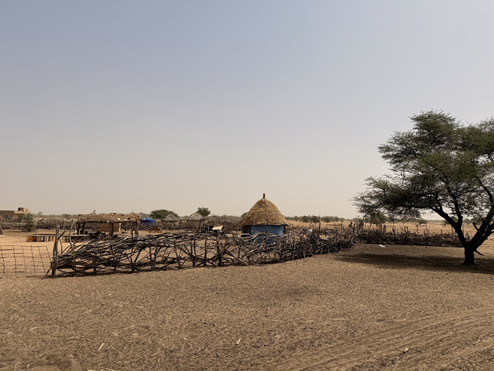
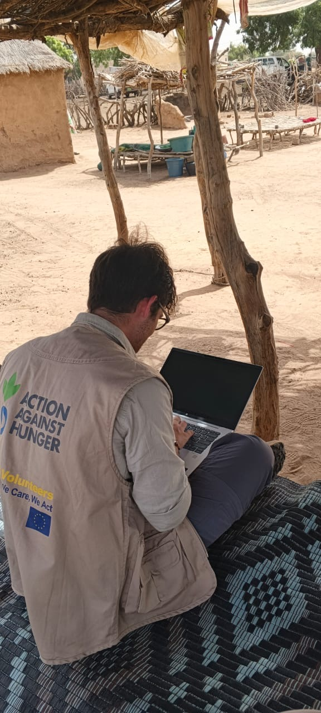

01Flood Susceptibility Assessment
Exploring topographic conditions and potential exposure to flooding through terrain analysis and geospatial data.
Project overview ↗GEOSPATIAL ANALYSIS · HUMANITARIAN ACTION · CLIMATE RESILIENCE
Geospatial analysis for a more resilient and equitable world.
I work at the intersection of GIS, climate-risk analysis and humanitarian programming — turning spatial data into insights that can support people and communities.
Currently based in Dakar, Senegal · Working across geospatial and humanitarian data
Spatial thinking
Human-centred analysis
Climate resilience
PLACES & EXPERIENCES
A map of the places where I have studied, worked and contributed to projects — from Europe to East and West Africa.
Locations are represented at city or campus level. Select a marker to read more about each experience.
SELECTED WORK · 01—03
Three projects exploring climate-related hazards, livelihoods and integrated humanitarian programming.

01Exploring topographic conditions and potential exposure to flooding through terrain analysis and geospatial data.
Project overview ↗
02Combining rainfall, vegetation and soil-moisture information to support the understanding of drought conditions and agricultural exposure.
Project overview ↗Designing a practical programme toolkit for the El Niño crisis, informed by humanitarian research and Action Against Hunger experience.
Project overview ↗This exploratory assessment focuses on topographic susceptibility and potential exposure in Matam. It draws on elevation data, terrain derivatives and relevant spatial layers. It is not a hydraulic simulation or a prediction of flood depth.
DEM · Terrain derivatives · Flow accumulation · CHIRPS · ESA WorldCover · QGIS
The monitoring approach brings together rainfall, vegetation and soil-moisture information to explore drought conditions and agricultural exposure across Matam and Louga.
CHIRPS · NDVI · Soil moisture · Cropland exposure · Remote sensing
My master's thesis developed a practical programme-design toolkit for the El Niño crisis in La Guajira, Colombia. The work combined academic literature, internal programme documentation and interviews with Action Against Hunger staff. The research did not involve a personal field visit to La Guajira.
WASH · Food security · Programme design · Humanitarian research · ACF GENRP II

A HUMAN PURPOSE
My work is driven by a simple idea: spatial data becomes meaningful when it helps us better understand people, places and the challenges they face.
With a background in political science and human security, and experience in humanitarian and development contexts, I use GIS and data analysis to explore questions around food security, climate risks and vulnerability.
LET'S CONNECT